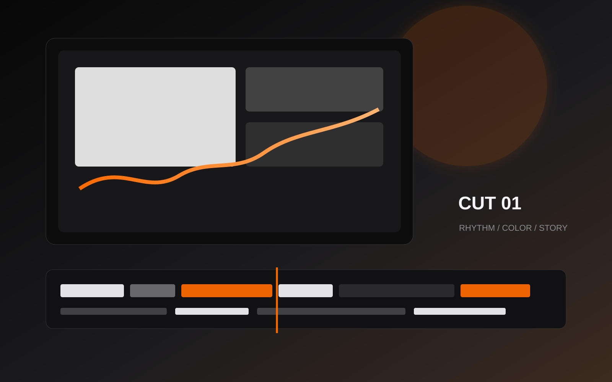

AI 宣传短片
AI 生成视觉、脚本节奏、剪辑包装与短视频传播版本。
查看作品Post Production / AI Promo Film / Live Visual
数字媒体技术本科生，传统后期剪辑从业 1 年。专注文旅宣传、非遗影像、现场主 K 与个性化 AI 宣传短片， 用清晰节奏和现代视觉把项目讲得更有记忆点。

Editor Statement
我擅长从大量素材中找到主线，建立节奏、情绪和信息层级。面对文旅、非遗和现场视觉类项目时， 我会优先保证表达准确、画面干净、版本可控；面对 AI 宣传短片，则把生成画面、脚本节奏和剪辑包装统一成完整叙事。
Work Categories
Signature Direction
结合 AI 生成视觉、脚本拆解、音乐情绪和传统剪辑节奏，为个人 IP、文旅内容、活动预热和品牌短片提供更轻量、 更具风格化的宣传影像方案。
参与理塘八一赛马会、德格印经院等非遗与文化影像项目后期。重点处理人物、地域、仪式感和文化细节之间的节奏关系， 让内容既保持纪录真实感，也具备宣传片需要的观看效率。
面向省级文旅传播项目，参与素材筛选、段落搭建、音乐情绪匹配与版本输出。页面表达上强化“文旅气质、地域记忆、传播效率”三件事。
支持活动现场大屏视觉、主 K、启动仪式内容与开场包装制作，重视尺寸适配、文字安全区、播放稳定性和现场交付节奏。
Work Index
Production Logic
明确传播场景、受众、主信息和必须保留的文化/品牌细节。
建立段落、音乐、镜头运动和情绪推进，让观看路径清晰。
完成字幕、基础动效、调色协作、横竖版适配和活动屏版本输出。
Resume
nzting / 女 / 22岁 / 四川工商学院 21级数字媒体技术本科生
具备 1 年传统后期剪辑经验，熟悉 Adobe Premiere Pro、After Effects、DaVinci Resolve 与剪映。 当前作品方向覆盖文旅宣传、非遗纪录、活动现场视觉和 AI 宣传短片。
Contact